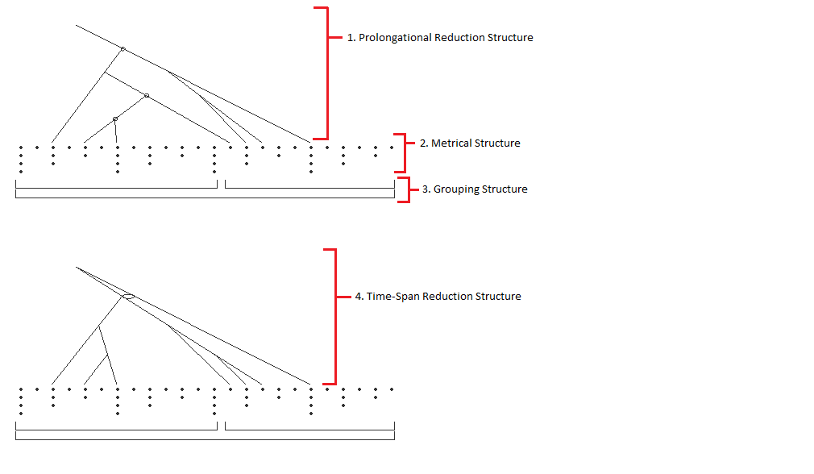

The GrammarIllustrator package makes use of the Java Swing API to generate visual representations of GTTM grammars.
The GrammarIllustrator class extends the JPanel class and can be embedded in Swing applications to visually represent GrammarContainer grammar structures. It follows the diagram standards set out in the Generative Theory of Tonal Music text.
When a grammar is printed out, it is displayed in the following way:
Extends JPanel to draw all aspects of the grammar structure.
Draws a representation of the grouping structure to a given Graphics2D object at a given position.
Draws a representation of the metrical structure to a given Graphics2D object at a given position.
Draws a representation of the prolongational reduction to a given Graphics2D object at a given position.
Draws a representation of the time-span reduction to a given Graphics2D object at a given position.
Extends the JFrame class to create a Swing frame with the GrammarIllustrator JPanel embedded within it.